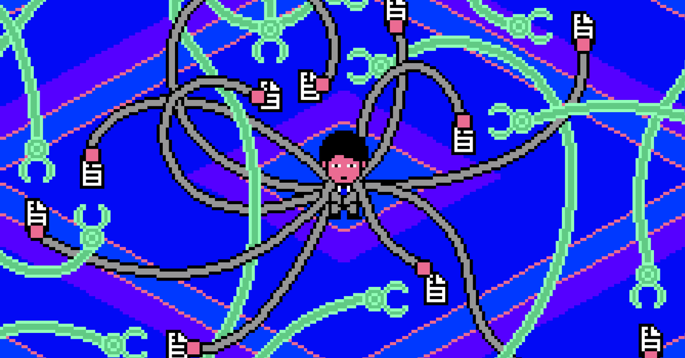
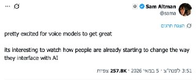
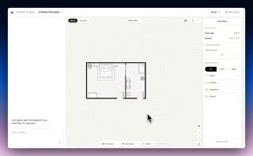

WIREDנמוכה11.05.2026, 00:00
Messages between Shivon Zilis and Tesla executives reveal plans in 2017 to start a rival AI lab, potentially led by Altman or Demis Hassabis.
אימות 1
Messages between Shivon Zilis and Tesla executives reveal plans in 2017 to start a rival AI lab, potentially led by Altman or Demis Hassabis.

לצד גל הפיטורים, חלק מחברות ההייטק עוברות לגייס לפי כישורים ויכולת עבודה עם AI ולא רק לפי ותק, כך שסטודנטים ובוגרים טריים מצליחים להיכנס ישירות לתפקידים משמעותיים.

Armed with some Python and a white-hot sense of injustice, one medical student spent six months trying to figure out whether an algorithm trashed his job application.

New research suggests that reliance on AI assistants can have a negative impact on people’s ability to think and problem solve.

גוגל תפתח ב-19 במאי גישה ל-Health Coach, עוזר בריאות מבוסס Gemini שיאסוף נתונים מ-Fitbit, Pixel Watch ורשומות רפואיות כדי לעקוב אחרי שינה, אימונים ותזונה.

OpenAI צפויה לשדרג את מצב השיחה הקולית ב-ChatGPT למודל GPT-5.5, עם יכולת להאזין ולדבר במקביל.

סטארט-אפ ממיאמי טוען שפיתח מודל שפה בשם SubQ עם חלון הקשר עצום של 12 מיליון טוקנים, שלדבריו מהיר משמעותית וזול בהרבה מ-Claude Opus 4.7 ומ-GPT-5.5 בביצועים דומים.

שוחרר תוסף ל-VSCode שמחבר אוטומציות של n8n עם סוכני AI, ממיר workflows לקבצים קריאים למודלי שפה ומאפשר להם לקרוא קוד, לערוך אותו ולהציע שיפורים.

לדבריו, השילוב יצר אפקטים בולטים במיוחד, כולל אפקט "פיתה" אינטראקטיבי.

קלוד קוד פותח כל סשן בקריאת `CLAUDE.md`, כך שההנחיות שמוגדרות בו משפיעות ישירות על אופן העבודה שלו. לפי הטקסט, אפשר להחיל את הקובץ ברמת כלל הפרויקטים, פרויקט משותף או הגדרה לוקאלית, ובמקביל לעקוב אחרי הזיכרון שקלוד בונה תוך כדי עבודה דרך `/memory` ואף
Ruflo מציגה פלטפורמה לניהול סוכני AI מבוססי Claude, שמאפשרת להקים "נחילים" של בוטים אוטונומיים המתקשרים זה עם זה, משתפים מידע ומבצעים משימות מורכבות.

Sci-Bot מוצג כעוזר AI למחקר מדעי, שמבוסס לפי התיאור על מאגר של כ-85 מיליון מחקרים, עונה על שאלות, מצטט עבודות ומפנה למקורות.

אנתרופיק כנראה מפתחת עוזר פרואקטיבי בשם הקוד "אורביט", שאמור לנתח בלילה שיחות ואפליקציות ובבוקר להציג סיכומים, תובנות והצעות פעולה.
iStores מציגה פלטפורמה ישראלית להקמה וניהול של חנויות אונליין, עם ניהול מלאי והזמנות, סליקה, משלוחים דרך Wolt ודואר ישראל וכלי AI להקמת אתר ועמודי מוצר. במסגרת מבצע שיווקי החברה מציעה 0% עמלת סליקה עד שנה או עד מחזור של רבע מיליון מכירות.

נוצרה קרוסלת אינסטגרם על סיפורה של הופ, צ'יטה מהמדבריום בבאר שבע שעברה התעללות באירלנד וכיום מטופלת בישראל, באמצעות שילוב של קלוד אופוס 4.7 ומודל התמונות החדש של GPT.

בוטוקס, איפור ומה לא. מסכן הנסיך הניגרי הוא מאבד כל עוקץ אפשרי הפרומפט שהשתמשתי בו: Create a hairstyle analysis graphic using this portrait.

פרטנר לשיחה: Chat with me in English as if we are friends sitting in a coffee shop. Correct my mistakes and explain in Hebrew when necessary 3️⃣ מאמן הגייה: Give me a phonetic breakdown of the following English phrases with tips on how to speak naturally 4️⃣ אופטימיזציה של דקדוק: Explain

Coinbase מפטרת 14% מעובדיה, כשהמנכ"ל מייחס את המהלך לזינוק ביעילות בזכות AI: משימות שפעם דרשו צוותים שלמים מתבצעות כיום בתוך ימים, וגם תהליכים לא טכניים עוברים אוטומציה.
הפוסט מנוסח בצורה שיווקית ומנופחת. העובדות שכדאי לקחת ממנו הן: ג'יפיטי 5.5 אינסטנט מתחיל להתגלגל עכשיו בצ'אט ג'יפיטי והרעיון שלו הוא להיות יותר קצר ותמציתי, הוא אמור להרגיש יותר "חמים" ויהיה יותר כיף לדבר איתו.
הכירו את Sulphur 2 — יצירת כל סרטון ללא צנזורה. המודל החדש שוחרר והוא מתעלם לחלוטין מאיסורים ומזכויות יוצרים. המודל מבוסס על Qwen 3.5, אחת מרשתות העצב הכי פופולריות כיום. הוא עובד במהירות ולא דורש משאבי חומרה כבדים מהמחשב שלכם.

הפוסט מציג טענת "חינם", אבל בלי אימות ברור מול המוצר הרשמי, ולכן צריך לראות בזה טענה שדורשת בדיקה.

הפוסט מציג טענת "חינם", אבל בלי אימות ברור מול המוצר הרשמי, ולכן צריך לראות בזה טענה שדורשת בדיקה.

הפוסט מציג טענת "חינם", אבל בלי אימות ברור מול המוצר הרשמי, ולכן צריך לראות בזה טענה שדורשת בדיקה.

הפוסט מציג טענת "חינם", אבל בלי אימות ברור מול המוצר הרשמי, ולכן צריך לראות בזה טענה שדורשת בדיקה.
הפוסט מציג טענת "חינם", אבל בלי אימות ברור מול המוצר הרשמי, ולכן צריך לראות בזה טענה שדורשת בדיקה.

שיאומי פתחה את MiMo V2.5 עם שתי גרסאות, Pro ורגילה, שתיהן עם חלון הקשר של מיליון טוקנים; דגם ה-310B הוא גם מולטי-מודאלי, מה שמרחיב את השימושים למפתחים וליישומי AI מורכבים.
המגעים בין ארה"ב לאיראן עלו על שרטון: טראמפ הגדיר את תשובת טהרן "בלתי מקובלת", ואיראן הודיעה שדחתה את ההצעה האמריקנית.

ביחידת אגוז מתארים כיצד שילוב של פשיטות חשאיות, מארבי צלפים ותחבולה מבצעית שיבש את ציר האספקה של חיזבאללה והביא להכרעת בינת ג'ביל.
הניסוח הזהיר יותר הוא: לאחר האיום האיראני על כל פריסת כוחות מערביים ליד הורמוז, מקרון הבהיר שצרפת לא תקדם מהלך צבאי שם ללא תיאום עם טהראן.
הניסוח הזהיר יותר הוא: ראש ממשלת לבנון נוואף סלאם אמר שביירות פתוחה לדיון על שלום עם ישראל במסגרת ערבית רחבה, אך כרגע מתמקדת בעצירת המלחמה, נסיגה ישראלית מדרום לבנון, שחרור אסירים והחזרת המפונים.

בישראל לא הופתעו מתשובת טהרן, שהובילה לתגובה חריפה מטראמפ. "ההסכם - זוועה לישראל, מצוין שלא התקבל", אמר גורם ישראלי - אך השאלה היא כיצד יפעל טראמפ. הביקור בסין, המונדיאל והרצון לא לחדש את המלחמה: זה מה שישפיע
The transfer took place at around 19:16 UTC, according to blockchain tracking service Whale Alert . The coins were moved from address “1KAA8GGhVjjUjVTz1HKAjCyGNzAKQd882j” to “bc1qm6m6d33d02edr0k8yj9jgt027zl6dvx6thjrxy.” The wallet had remained inactive since November 2013, when BTC was
A 39-year-old man was charged with failing to comply with a digital evidence access order plus other charges. A 41-year-old man faces charges of dealing with property proceeds of crime over $100K for allegedly transferring the cryptocurrency.

Crypto companies are upgrading wallets to counter the coming quantum computing threat, but gaps remain.

London, United Kingdom, 8th May 2026, Chainwire

Two papers published this week have reignited debates about the risk posed by “Q-day” to the cryptography that underpins digital assets.

הפועל באר שבע חזרה לפסגת ליגת העל אחרי 2:4 על הפועל פ"ת, במשחק שבו חמישה שינויים בהרכב השתלמו.

עדכון קצר סביב הצהובים ניסו לשים בצד את פרשת רוני דיילה ורשמו 0:4 קליל על הפועל פ"ת. קני מילר עמד על הקווים: "היו 48 שעות קשות". רוי רביבו: "כשמאמן עוזב זה לא נעים, אבל המשכנו קדימה".